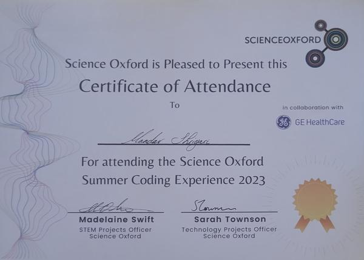

STEM Summer Coding and Robotics Experience - Oxford Science Centre
This was a Work experience where I made a line-following robot and met with leading industrial companies such as GE and Oxford PV at Oxford Science Centre.
From a young age, I have been captivated by the wonders of STEM. Joining ATL (Atal Tinkering Lab) at 11, I engaged in various STEM projects, including creating a video game with Unity and developing a device for individuals with hearing impairments. My academic journey at Ditton Park Academy has been marked by high achievements in mathematics and physics, self-learning advanced concepts, and earning medals in math challenges. Practical experiences at the Oxford Science Center and virtual work with Airbus further solidified my skills in Python programming, robotics, and problem-solving. Beyond academics, I am an avid chess player, photographer, and athlete. Passionate about quantum computing, I am eager to leverage this technology for societal benefit, particularly in the medical field. I look forward to pursuing my education and career in an environment that values unity, curiosity, growth, and service, aligning with my aspirations for comprehensive personal and academic development.

This was a Work experience where I made a line-following robot and met with leading industrial companies such as GE and Oxford PV at Oxford Science Centre.
This work experience was from Airbus where I learned about the company and the aviation manufacturing industry in a virtual platform called Springpod.

ATL is an Indian government initiative which provides support and education to students who want to pursue careers in STEM with help from top companies such as AWS and Microsoft.

This work experience was at Siemens, where I explored the company's diverse work in the industry.
In this experience, I made a robot which is line-following robot which follows a black line using an Infrared sensor to complete the project I learnt many things such as the coding language micro python, circuit building, soldering, CAD designing and other character-building lessons such as problem-solving and resilience to solve problems with robot.. This knowledge can be helpful in my STEM career and make me eligible for the gold crest award.
STEM experience organized by the Oxford Science Center marked a significant chapter in my journey. Practical insights gained from companies like GE Healthcare and Oxford PV Working with these company's has given valuable skills which are transferable to any field such as Adaptability and Analytical Thinking as I worked with a team to solve some challenges on some projects which I think would play an important role.
Phasellus convallis elit id ullamcorper pulvinar. Duis aliquam turpis mauris, eu ultricies erat malesuada quis. Aliquam dapibus, lacus eget hendrerit bibendum, urna est aliquam sem, sit amet imperdiet est velit quis lorem.
Phasellus convallis elit id ullamcorper amet et pulvinar. Duis aliquam turpis mauris, sed ultricies erat dapibus.
Phasellus convallis elit id ullamcorper amet et pulvinar. Duis aliquam turpis mauris, sed ultricies erat dapibus.
Phasellus convallis elit id ullamcorper amet et pulvinar. Duis aliquam turpis mauris, sed ultricies erat dapibus.
Phasellus convallis elit id ullamcorper amet et pulvinar. Duis aliquam turpis mauris, sed ultricies erat dapibus.
Phasellus convallis elit id ullamcorper amet et pulvinar. Duis aliquam turpis mauris, sed ultricies erat dapibus.
Phasellus convallis elit id ullamcorper amet et pulvinar. Duis aliquam turpis mauris, sed ultricies erat dapibus.
At my first-ever IET competition in 2018, I won the first prize in the robotics category, showcasing my ability to innovate and problem-solve effectively.
Consistently securing a gold medal in the UKMT Math Challenge for three consecutive years, demonstrating my strong analytical and problem-solving skills.
Recognized as a Young Innovator by ATL for my project on assistive technology for individuals with hearing impairments, showcasing my dedication to using technology for social good.
Published a research paper on Quantum Computing in a reputed journal, reflecting my deep interest and knowledge in advanced computing technologies.
Feel free to reach out to me for any inquiries or collaborations. I am always open to discussing new ideas and opportunities.